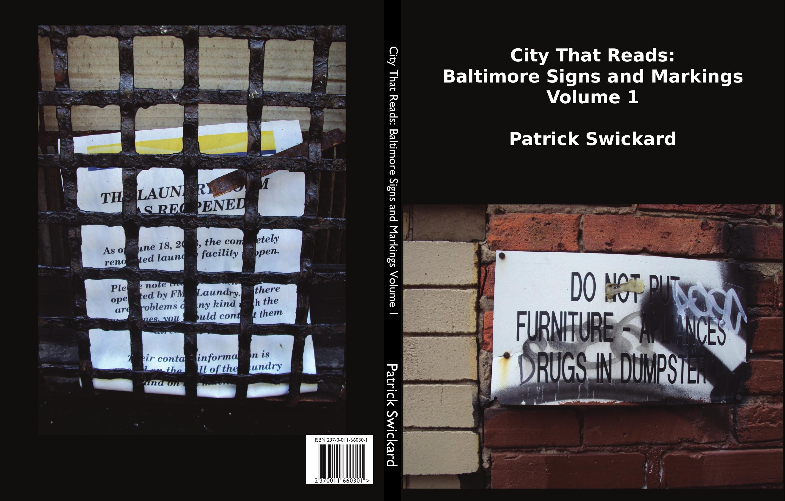

I know my way 'round town
Used to live around here
I know the sites to see
The things they mean to me
And how we tore it down
Let me walk with you
'Cause it's breaking my heart
The things that we had
The good and the bad
Now it's parking lots
Don't let's talk about tomorrow
Baby, standin' at the edge of sorrow
Let's watch the whole world goin' slow
Let's watch the whole world goin' slow
- Pere Ubu
The journey begins! This volume features such joys as nudes stenciled on the sidewalk, religious flyers, dog walking posters, raptured bronies, Port-a-John cartoons, hand-printed instructions for delivery drivers, boarded window art, classic STAB, the fence by Bell Foundry, and more. Most images taken around Mount Vernon and Station North.
Includes: